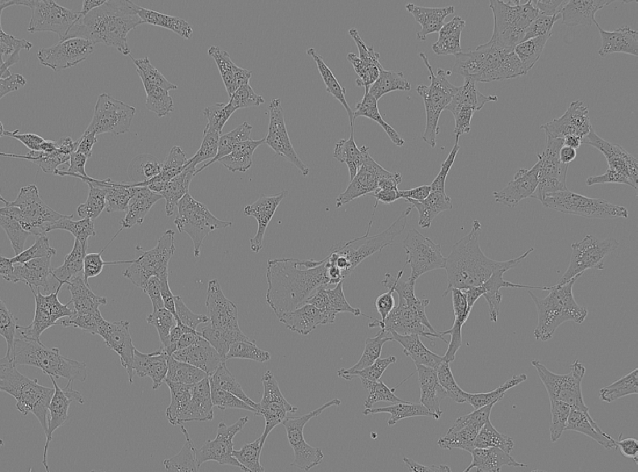
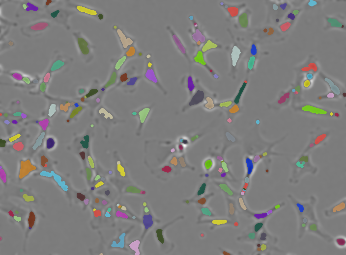
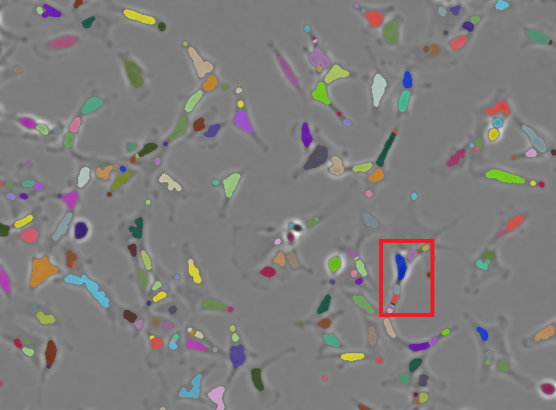
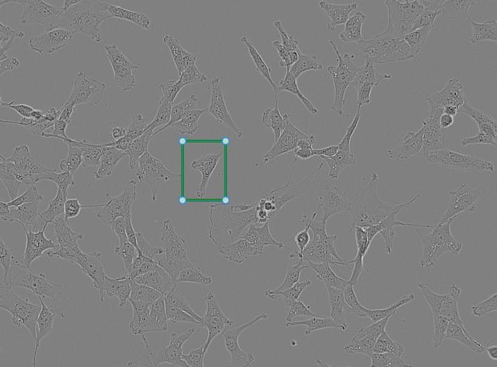
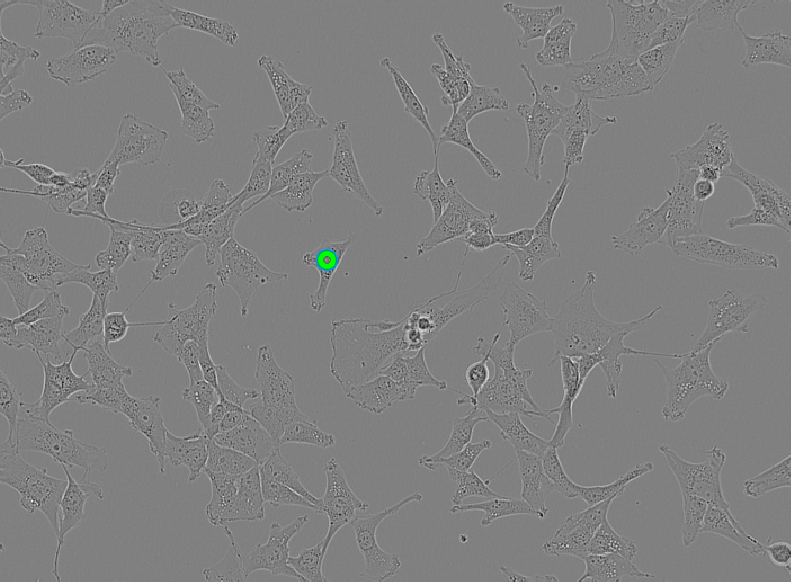
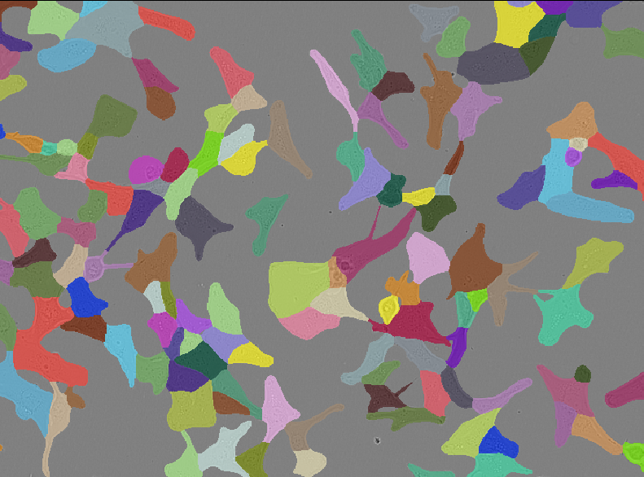

Segment Anything for Microscopy (μSAM)
Last updated on 2026-09-04 | Edit this page
Estimated time: 50 minutes
Overview
Questions
- What is μSAM and how does it differ from classical image‑processing?
- When do traditional image analysis methods fail, and how can AI models help in those cases?
Objectives
- Think about when classical methods succeed or fail
- Use μSAM area and point prompts to aid segmentation and explore automatic mode, to segment a live‑cell image inside napari.
Segment unlabeled live cells
In this episode we will use a deep-learning model to segment an image of unlabeled live cells.
But before we do so, let’s apply traditional image analysis methods on this image to see how these perform.
Create a new notebook called livecells.ipynb and run the
code below to open the unlabeled live-cell sample image that comes with
the μSAM plugin.
PYTHON
# Open a sample image in the viewer
viewer = napari.Viewer()
viewer.open_sample("micro_sam", "micro_sam-livecell")The output should look like this.
OUTPUT
[<Image layer 'livecell' at 0x2352a276ba0>] and the image below should open in the napari viewer.

Take a moment to look at the image. Check the contrast, hover over pixels to see their values, and confirm whether the data is 2D or 3D before continuing.
For details on the dataset this image came from see https://doi.org/10.1038/s41592-021-01249-6. Let’s try to segment these cells using the image analysis approaches we explored in the first half of the workshop.
Import the tools we need from skimage
We will import the tools from skimage. Except
disk from skimage.morphology, we used all of
these in the previous
episode.
PYTHON
# Import the functions we need from scikit-image
from skimage.filters import threshold_otsu, gaussian
from skimage.morphology import erosion, disk
from skimage.measure import label
from skimage.segmentation import expand_labelsDisk vs Ball Structure Element
You may notice that in this part of the workshop we import
disk from skimage.morphology, whereas earlier
we used a ball.
Why should you use a disk‑shaped footprint rather than a ball‑shaped footprint when performing morphological operations on this image?
Morphological operations rely on a structuring element whose shape must match the dimensionality of the data. Because the image we are working with is two‑dimensional, the appropriate structuring element is a disk footprint (a circular shape defined in the x–y plane).
A ball footprint, by contrast, is a three‑dimensional structuring element. It assumes the presence of a z‑axis and is only meaningful when working with three-dimensional images.
We are now going to use these tools to create an instance segmentation of the cells, following the same steps we used in the previous episode.
Dilate labels
PYTHON
# Dilate labels
instance_seg = expand_labels(eroded_labels, 3)
# Add to viewer
viewer.add_labels(instance_seg)Below is the result of applying our traditional workflow to the unlabeled live‑cell image.

While many of the cell regions have been identified. Some cells have been largely missed out or broken apart.
This splitting is called over‑segmentation, as shown in the example highlighted in the red box below.

Segmenting an unlabeled image
Why do classical image‑processing methods struggle here?
Traditional image-processing methods depend on clear intensity differences between structures of interest and the background.
In fluorescence imaging, traditional methods usually work well because labeled structures appear bright and distinct.
But in label‑free imaging, cells are more heterogeneous in appearance and often have only subtle intensity differences from the background (with some areas being brighter, and others darker in this sample), making thresholding unreliable.
Image analysis methods often rely on labels like fluorescent proteins. However, labeling may not always be possible or desirable.
Label‑free settings are an example of situations in which traditional image analysis methods of microscopy images can become significantly harder.
AI-based segmentation methods
AI‑based segmentation methods can address these limitations.
AI models used for image segmentation are trained on large collections of images paired with “ground‑truth” segmentation masks.
These masks may come from manual annotation or semi‑automated annotation refined by experts.
During training, the model repeatedly predicts segmentation masks and compares them to the ground truth.
The difference between the prediction and the ground‑truth mask is measured and the model then adjusts its internal parameters to reduce this error.
Once trained, the model can apply what it learned to new images.
The nature and diversity of the training data determines how well the model generalises to new cell types and imaging modalities.
μSAM
The Segment Anything Model (SAM) was developed by Meta AI. It was released in 2023 alongside the dataset, a collection of over 1.1 billion segmentation masks across 11 million images.
μSAM is a microscopy‑adapted version of the Segment Anything Model designed specifically for biological images.
As a napari plugin, μSAM integrates directly into the napari image viewer. You can load images, add area or point “prompts”, run automatic segmentation, and immediately inspect or refine the results.
Open Annotator 2d
Remove all layers except for the livecells layer from
the napari viewer, and open the μSAM annotator.
plugins > Segment Anything for Microscopy > Annotator 2d
This opens an Annotator 2d window, where you can select an image and model, and interactively segment objects.
In the layer list you will see a number of new layers appear: - prompts - point_prompts - committed_objects - auto_segmentation - current_object
We will have a look at these layers after computing the “embeddings”.
Embeddings
When μSAM processes an image, it needs to compute the image’s embeddings. The embeddings contain a compact, multi-dimensional representation of the imaging data that captures it’s features.
This is a computationally expensive step that is done only once per image for the specific model you are using.
Once the embedding is computed, μSAM can deliver fast, interactive segmentation, as the embedding is reused for every prompt on this image.
In the Annotator 2d window, have a look at the Embedding Settings. Here, you can load pre-computed embeddings and select things like the size of the model (the bigger the model the longer it will take to compute the embeddings).
For this workshop we will use the default settings to compute the embeddings by clicking on Compute Embeddings.
Area prompts
Now that we have computed the embeddings, let’s first explore the area prompts.
Area prompts let you draw a region on the image and μSAM will propose a segmentation for the object inside that region.
Box prompt
We start with the simplest area prompt: the box prompt.

Creating a box prompt: - Select the prompts layer from the
layer list and pick the box tool
- Click and drag on the image to draw a rectangular region around one
cell - In the Annotator 2d window click on Segment
Object - To “commit” the object, click Commit Object in
the Annotator window
Shortcuts, multiple objects at once, and polygons
- Use keyboard shortcuts to segment and commit an object.
- Use multiple box prompts at once to segment multiple objects.
- Use a polygon prompt to segment an irregularly shaped cell
Using shortcuts After creating a box prompt, press
S to segment and C to commit the object.
Segmenting multiple objects at once In the prompts layer, draw several box prompts before running Segment Object. μSAM will generate a segmentation for each box simultaneously. After reviewing them, click Commit Object(s) to add all segmentations at once.
Using a polygon prompt Select the polygon tool in the prompts layer. Click around the outline of an irregular cell to define a custom shape. Once the polygon is closed, run Segment Object to generate the segmentation.
Point prompts
Point prompts let you guide μSAM using single points rather than areas.
They are especially useful when cells are small, touching, or hard to isolate with boxes.
There are two types of point prompts: - Positive points - Negative points
Creating point prompts - Select the point_prompts layer in the layer list - Choose the positive point tool - Click on the image to place a point - In the Annotator 2d window, click Segment Object - Commit the object if the segmentation looks correct
Positive points should be placed inside the cell you want to segment.
Negative points help μSAM avoid including neighbouring cells or background regions.
The image shows a single positive point prompt placed on one of the cells.

Batched segmentation using point prompts
What happens when you place point prompts in multiple cells and click Segment Object without ticking the batched option?
What happens if you now toggle it on and click on Segment Object again?
By default μSAM treats all point prompts as belonging to one single object.
With batched enabled, μSAM treats each point prompt independently and μSAM returns one segmentation per point, producing multiple separate cell masks.
Automatic segmentation
Automatic segmentation lets μSAM propose all cell masks in the image without any prompts.
To run automatic segmentation using the default settings: - In the Annotator 2d window click on Automatic Segmentation
μSAM will generate a full‑image segmentation and place it in the auto_segmentation layer
If automatic segmentation clashes with existing committed objects
(overlaps, duplicates): - Delete the committed_objects
layer - Re‑run Automatic Segmentation - Commit again (μSAM will create a
new committed‑objects layer automatically)
The results of the automatic segmentation will look like the image below.

Automatic segmentation in a Jupyter notebook
μSAM also supports automatic segmentation directly from Python.
This gives you a full‑image segmentation directly in Jupyter, using the same μSAM model and settings as the napari plugin.
Create a new Jupyter notebook called
livecells-microsam.ipynb to run the code blocks below.
PYTHON
# import packages
from micro_sam.automatic_segmentation import get_predictor_and_segmenter, automatic_instance_segmentation
import napariPYTHON
# Load model
predictor, segmenter = get_predictor_and_segmenter(model_type="vit_b_lm")
# Run automatic segmentation
auto_seg = automatic_instance_segmentation(
predictor=predictor,
segmenter=segmenter,
input_path=image # you can also pass a file path
)
# Add to viewer
viewer.add_labels(auto_seg)Additional resources and other functionality
Other μSAM functionality includes fine tuning models and segment objects across multiple slices of a stack for 3D volumetric or time‑lapse data with their 3D Annotator and Tracking Annotator respectively. It does a decent job at matching the masks of the same object across slices, assigning consistent labels throughout the volume or across time.
Learners who want to explore μSAM further can have a look at μSAM’s:
Documentation which includes guides on how to get set up and use their annotators.
Video tutorials with walkthroughs showing μSAM in napari, including 3D segmentation and time‑lapse annotation.
Other napari plugins that use AI models
Empanada (
empanada-napariplugin) is designed for electron microscopy (EM) segmentation.Cellpose (
cellpose-napariplugin), provides generalist deep‑learning segmentation for a wide range of microscopy images.Stardist (
stardist-napariplugin) a popular model mainly for cell nuclei. It also has a napari wrapper - but again, not updated in a while unfortunately.Cellfinder (
cellfinder-napariplugin), part of the BrainGlobe ecosystem, detects fluorescently labelled cells in large 3D images.
- Classical image analysis methods often fail on label‑free images with subtle contrast.
- μSAM adapts Segment Anything Model (SAM) for microscopy and integrates it into napari, providing robust segmentation tools for biological images.
- μSAM supports area and point prompts, plus full image automatic segmentation.
- Initial embedding step can be slow, especially with larger models.
References
Archit, A., Freckmann, L., Nair, S., Khalid, N., Hilt, P., Rajashekar, V., Freitag, M., Teuber, C., Spitzner, M., Tapia Contreras, C., Buckley, G., von Haaren, S., Gupta, S., Grade, M., Wirth, M., Schneider, G., Dengel, A., Ahmed, S., & Pape, C. (2025). Segment Anything for Microscopy. Nature methods, 22(3), 579–591. https://doi.org/10.1038/s41592-024-02580-4
Edlund, C., Jackson, T. R., Khalid, N., Bevan, N., Dale, T., Dengel, A., Ahmed, S., Trygg, J., & Sjögren, R. (2021). LIVECell-A large-scale dataset for label-free live cell segmentation. Nature methods, 18(9), 1038–1045. https://doi.org/10.1038/s41592-021-01249-6